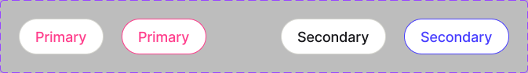
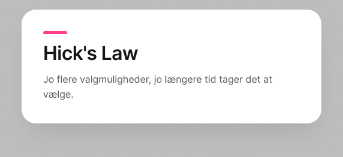
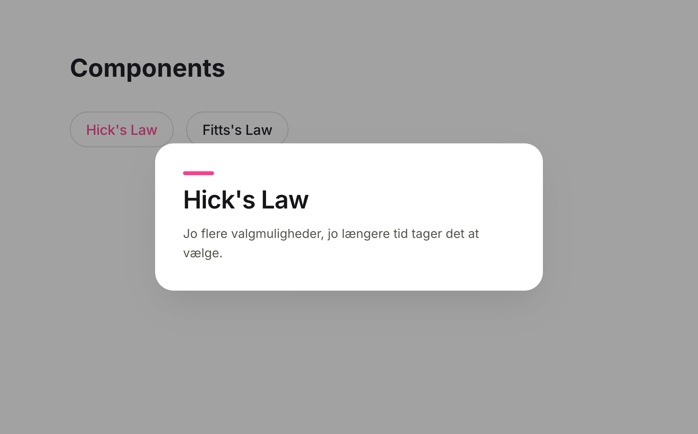
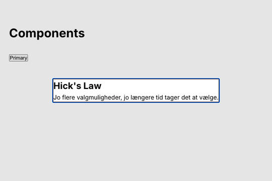
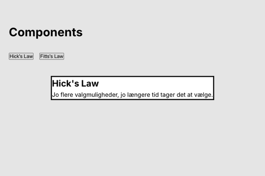
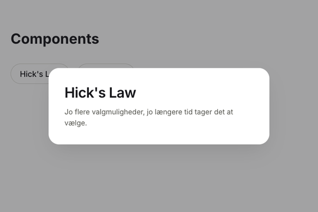
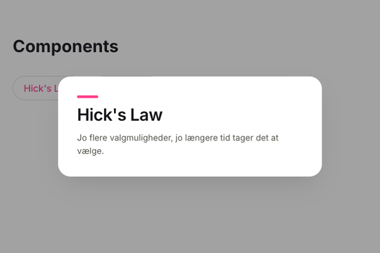
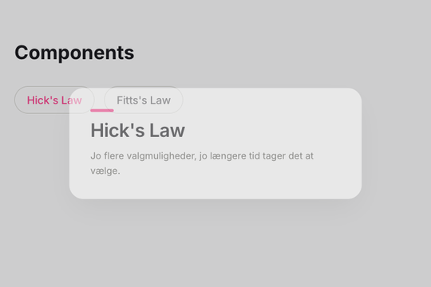

Den, der bruger komponenten, bestemmer
Type · showSeparator · teksterne
<Pill type="secondary">
Fra Figma til React/Next.js · i hånden og med Figma MCP
RACE
npm i
Pill + Modal = PillModal · "use client"
map, fold ud og fra kode til Figma


Pill og komponenten Modal i demofilen
<button> åbner en <dialog> · tokens fra dine variablesTo rul: Først i hånden, så med en agent. Rul 1 giver dig forståelsen til at vurdere agentens kode.
De fleste begreber, du har brugt i Figma i dag, har et navn i React.
Color/Primary · Paddings/lgTokens i globals.css: --color-primary
Pill · ModalEn funktion med sin egen CSS Module: Pill.js
<Pill type="secondary">Fitts's Law</Pill>
Type · StateEn prop eller CSS — se næste slide
showSeparator{showSeparator && <hr />}
flex-direction, gap, padding
Type · showSeparator · teksterne
<Pill type="secondary">
State=Hover · fokus med tastaturet
:hover · :focus-visible
Modalen er åben eller lukket
useState(false) · isOpen
Spørg: Hvem bestemmer værdien? Ikke alle variants bliver til props. Agenter laver ofte
State til en prop som state="hover".
onClick sætter isOpen med useState
<dialog> åbnet med showModal()
onClose · Esc virker af sig selv
transition: opacity 300ms ease-out
Åbn starterrepoet, og klik Use this template → Create a new repository.
Klon dit nye repo med GitHub Desktop eller Source Control → Clone Repository i VS Code.
npm i
npm run devLæg din fil i dit Education-team, ikke i Drafts. Ingen færdig komponent? Duplikér demofilen.
Du er klar, når: localhost:3000 viser Components og en knap med teksten Pill.
components/Pill.jsComponent set'et Pill — en tom <button> · 1.1
components/Modal.jsKomponenten Modal — en tom <dialog> · 1.1
components/PillModal.jsPrototypen: Pill og Modal sat sammen — den opretter du · 1.2
app/globals.cssDine variables som tokens — kommentarer viser, hvor de skal ind · 1.3
*.module.cssAuto layout og styling for hver komponent · 1.3
app/page.jsSiden, der viser komponenterne — som din frame i Figma
Samme opsætning som 26. oktober: App Router, JavaScript og ingen Tailwind. Men det er et nyt projekt — ikke din WordPress-app.
Få pill og modal til at virke sammen. Så bygger du designet ovenpå.
PillModal består af Pill og
Modal — ligesom en instance inde i en anden i Figma.

1.1 Pill og Modal En<button> og en <dialog>

1.2 PillModal Klik åbner, Esc lukker
1.3 Tokens og CSS Variables og auto layout
1.4 VariantsType, hover og showSeparator

1.5 Animation Smart Animate somtransition
Byg → tjek → commit. Hvert trin slutter med en version, der virker. Agenten i rul 2 bygger i samme rækkefølge.
<button> og en <dialog>components/Pill.js
export default function Pill({ onClick, children }) {
return (
<button
type="button"
className={styles.pill}
onClick={onClick}
>
{children}
</button>
);
}Teksten bliver til children. onClick kommer fra den, der bruger pillen.
components/Modal.js · uddrag
export default function Modal({
isOpen, onClose, title, text
}) {
const dialogRef = useRef(null);
useEffect(() => {
if (isOpen) {
dialogRef.current.showModal();
} else {
dialogRef.current.close();
}
}, [isOpen]);
return (
<dialog ref={dialogRef} onClose={onClose}>
<h2>{title}</h2>
<p>{text}</p>
</dialog>
);
}showModal() giver fokus, Esc og en backdrop gratis. Det gør open-attributten ikke.
PillEn <button type="button"> med children og onClick som props.
ModalEn <dialog> med title og text. En ref kalder showModal(), når isOpen er true.
Vis pillen i app/page.js. Giv modalen isOpen et øjeblik for at se den.
useEffect only works in Client Components? Tilføj "use client" øverst i Modal.js. Cannot read properties of null (reading 'showModal')? Sæt ref={dialogRef} på <dialog>.
Du er klar, når: Pillen viser din tekst, og med isOpen åbner modalen, når siden loader. Esc lukker den.
PillModal sætter dem sammencomponents/PillModal.js
"use client";
import { useState } from "react";
import Modal from "./Modal";
import Pill from "./Pill";
export default function PillModal({ label, title, text }) {
const [isOpen, setIsOpen] = useState(false);
return (
<>
<Pill onClick={() => setIsOpen(true)}>{label}</Pill>
<Modal isOpen={isOpen} onClose={() => setIsOpen(false)}
title={title} text={text} />
</>
);
}PillModal. Så skal page.js kun skrive
<PillModal label="Hick's Law" … />.
"use client" lige dér?Server components er standardpage.js kører kun på serveren. Browseren får færdig HTML.
"use client" er en grænseKomponenten og alt, den importerer, sendes også som JavaScript til browseren.
Kun dér, hvor den skal reagereState, effects og events. Hold grænsen så langt nede i træet som muligt.
Pill behøver det ikkeDen har ingen state, men kører i browseren, fordi PillModal importerer den.
Som 26. oktober: Server components er standard. I morgen møder du begge slags igen, når Supabase skal bruges på både server og client.
PillModalOpret components/PillModal.js med "use client" og isOpen i useState.
Pillens onClick åbner. Modalens onClose lukker, også når brugeren trykker Esc.
Vis to PillModals med hver sin tekst i app/page.js.
Åbner modalen kun første gang? onClose skal sætte isOpen til false. Ellers tror state, at den stadig er åben.
Du er klar, når: Et klik åbner modalen, Esc lukker den, og fokus kommer tilbage til pillen. Commit.
Eller knappen i toolbaren. Dev Mode kræver et Full- eller Dev-seat — det har du på Education-planen.
Vælg component set'et. Øverst i Inspect står Type, State og showSeparator.
Vælg et lag. Inspect viser CSS. En variable står som var(--…) med værdien som fallback — brug dit eget token-navn.
Gå til Design-tilstand, klik på et tomt sted på canvas, og åbn Local variables for at se dem alle.
:rootapp/globals.css · uddrag
:root {
/* Color */
--color-primary: #ff3d8b;
--color-neutral-grey-900: #16161a;
/* Typography */
--font-family-primary: var(--font-inter), sans-serif;
--font-size-lg: 32px;
--font-weight-semi-bold: 600;
/* Spacing: gaps and paddings */
--paddings-lg: 36px;
}
body {
color: var(--color-neutral-grey-900);
}NavneSmå bogstaver. / og mellemrum bliver til -: Color/Neutral/Grey 900 → --color-neutral-grey-900.
Tal får en enhedNumber-variablen Paddings/lg = 36 bliver til 36px.
Font weight er et talRegular 400 · Medium 500 · Semi Bold 600 · Bold 700.
Brug dem med var()Ret værdien ét sted, og alle komponenter følger med — ligesom i Figma.
Pill.module.css og Modal.module.css · uddrag
.pill {
display: inline-flex;
align-items: center;
height: var(--btn-height-md);
padding: 0 var(--paddings-sm);
border-radius: var(--border-radius-full);
}
.modal {
width: 500px;
max-width: calc(100% - 32px);
padding: 0;
}
.content {
display: flex;
flex-direction: column;
gap: var(--gaps-md);
padding: var(--paddings-lg);
}Auto layout → flexboxDirection, gap og padding hedder næsten det samme.
Kun tokensEr værdien en variable i Figma, så brug var(). Skyggen har ingen variable, så den skriver du direkte.
Fast bredde500px fra Figma og max-width, så modalen passer på en mobil.
Klik udenforUden padding på <dialog> er et klik på den selv et klik på backdroppen: event.target === event.currentTarget.
Skriv dine variables ind i grupperne i app/globals.css. Brug to af dem på body.
Style .pill, .modal, .content, rubrik og tekst med værdierne fra Inspect.
Læg indholdet i <div className={styles.content}>, og luk, når klikket rammer <dialog> selv.
Virker et token ikke? Inspicér <html> i DevTools, og tjek stavningen under :root. Lukker modalen ved klik inde i den? Flyt padding fra .modal til .content.
Du er klar, når: Pill og modal ligner Figma, alle værdier kommer fra tokens, og klik udenfor lukker.
Type bliver en prop, State bliver CSSPill.js og Modal.js · uddrag
// Pill.js
export default function Pill({ type = "primary", onClick, children }) {
return (
<button
type="button"
className={`${styles.pill} ${styles[type]}`}
onClick={onClick}
>
{children}
</button>
);
}
// Modal.js
{showSeparator && <hr className={styles.separator} />}
// Brug:
<PillModal type="secondary" showSeparator={false} … />Type → proptype="primary" vælger klassen .primary i CSS'en.
State → CSS.primary:hover og .primary:focus-visible — ikke en prop.
Boolean → &&Er showSeparator false, vises linjen ikke. Standardværdien er true som i Figma.
To slags typetype="button" er HTML. Din prop type vælger variant.
TypeGiv Pill prop'en type, og lav én klasse pr. type. Send den videre fra PillModal.
Samme stil på :hover og :focus-visible, så tastaturet også ser den.
showSeparatorEn boolean med standardværdien true. Prøv showSeparator={false} på én pill.
Virker styles[type] ikke? Klassen skal hedde det samme som værdien: .primary til type="primary". Separatoren er en grå streg? Sæt border: none og en background på <hr>.
Du er klar, når: Begge typer ligner Figma, hover og fokus kan ses, og separatoren forsvinder med false.
components/Modal.module.css · nederst
.modal {
opacity: 0;
scale: 0.95;
transition:
opacity 300ms ease-out,
scale 300ms ease-out,
overlay 300ms ease-out allow-discrete,
display 300ms ease-out allow-discrete;
}
.modal[open] {
opacity: 1;
scale: 1;
}
@starting-style {
.modal[open] {
opacity: 0;
scale: 0.95;
}
}Varighed og easingFind dem i din prototype, fx Ease out, 300ms.
@starting-styleHvor animationen starter, når modalen åbner.
allow-discreteHolder modalen synlig, mens den animerer ud. Firefox lukker uden animation.
Pillentransition på border-color og color.
Tilføj transition på pillen og på modalen, inkl. ::backdrop.
Tab til pillen, åbn med Enter, og luk med Esc. Fokus kommer tilbage til pillen.
Med Source Control i VS Code eller GitHub Desktop.
Animerer modalen ikke ud? Du skal have både overlay og display med allow-discrete. Sidder du fast? Fold løsningen til rul 1 ud i opgavefilen.
Du er klar, når: Modalen fader ind og ud, du kan bruge den med tastaturet alene, og arbejdet er pushet.
Færdig med rul 1? Start på opsætningen af Figma MCP, så er du klar, når vi går i gang igen.
— men den ved kun det, der står i filen og i din prompt.
Får din prompt og et link til en node i Figma.
mcp.figma.com/mcpGiver agenten værktøjer til at læse og skrive i filen. Du logger ind med din Figma-konto.
Lag, variables, properties og et billede af designet.
get_design_contextReferencekode og et screenshot af noden
get_variable_defsDe variables, noden bruger
use_figmaSkriver til Figma: lag, komponenter og variables
whoamiHvem du er logget ind som, og dit seat
Begge veje: I rul 2 læser agenten designet og skriver kode. I ekstra 4 går det den anden vej: Du ændrer koden, og agenten opdaterer Figma.
Ikke i Drafts. Så har du Dev Mode og 200 kald om dagen i stedet for 20 om måneden.
Log ind med den Figma-konto, der har adgang til filen, og klik Allow access.
Højreklik på din komponent i Figma → Copy link to selection.
whoamiViser din e-mail, din plan og dit seat. Det tæller ikke med i grænserne.
Linket er konteksten. Agenten læser den node, linket peger på — ikke det, du har markeret i Figma. Link til én komponent ad gangen.
Figma: Remote server installation ↗ Figma: Rate limits & access, tjekket 28.10.2026 ↗
Server-URL: https://mcp.figma.com/mcp
figma med URL'en og "type": "http"figma · Streamable HTTP · URL'en/plugins → installér figma fra den officielle marketplace/mcp → figma → log indAndet setup? Det er fint. Brug samme URL, og følg Figma's guide til din agent. Trinene med kode står i opgavefilen.
Figma: Remote server installation ↗ OpenAI: Codex og MCP ↗ Claude Code: VS Code ↗
Tilføj Figma MCP i din extension i VS Code: Copilot, Codex eller Claude Code.
Filen ligger i dit Education-team. Log ind med samme konto, og klik Allow access.
whoamiBed agenten: Kør whoami fra Figma MCP. Tjek e-mail og plan.
Kan agenten ikke se Figma? Genstart agenten eller VS Code. I Copilot skal du bruge Agent-tilstand. Står der ikke Education? Flyt filen fra Drafts. Virker det slet ikke? Arbejd sammen med en, hvis MCP virker.
Du er klar, når: whoami viser din skole-e-mail og Education-planen.
PillFx state="hover" som prop. Ret: :hover i CSS.ModalFx en <div>. Ret: <dialog> med showModal().PillModalKlik, Esc og klik udenfor virker. Commit.En god rettelse siger, hvad der er forkert, hvad det skal være, og at agenten kun skal rette det.
Next.js med App Router og JavaScript, ikke TypeScript. CSS Modules og tokens fra app/globals.css — ingen Tailwind eller hardcodede værdier. Pillen er en <button>, modalen en <dialog> med showModal(). Hover med :hover i CSS. Lav kun det, jeg beder om.
Byg komponenten Pill fra mit Figma-design: <link til Pill>
Læs design, variables og component properties med Figma MCP. Læg den i components/agent/, og vis den på app/agent/page.js.
Fortæl, hvilke props og tokens du brugte, og hvad du ikke kunne se i Figma.
get_design_context på Pill · forkortet
type PillProps = {
state?: "Default" | "Hover";
type?: "Primary" | "Secondary";
};
export default function Pill({ state = "Default", type = "Primary" }: PillProps) {
return (
<div className="bg-[var(--color\/neutral\/white,white)] border border-solid
flex h-[var(--btn-height\/md,46px)] items-center
px-[var(--paddings\/sm,20px)] rounded-[var(--border-radius\/full,9999px)]">
<p className="font-medium text-[length:var(--font-size\/md,18px)]">
Primary
</p>
</div>
);
}TypeScripttype PillProps — vi skriver JavaScript.
TailwindKlasser i stedet for CSS Modules og dine tokens.
<div> og <p>Ikke en <button> — og intet onClick.
state som propHover bliver ikke til :hover af sig selv.
Det er en reference, ikke færdig kode. Figma beder selv agenten oversætte den til projektets stack. Om det sker, er det, du validerer — og derfor står reglerne i prompten.
.tsx og type PillProps?style={{ }}?<button> og <dialog> — eller <div> med onClick?:hover i CSS — eller en prop som state="hover"?position: absolute?Start en ny chat, og send de faste regler først.
Link til din Pill. Validér, og ret med præcise prompts, til den er rigtig.
Næste iteration: Modal, så PillModal. Validér, og commit agentens version for sig.
TypeScript eller Tailwind? Henvis til reglerne. Ingen adgang? Tjek whoami og linket. Rate limit? Arbejd sammen med en, hvis MCP virker.
Du er klar, når: Agentens PillModal kører på /agent, du har rettet mindst én ting med en præcis prompt, og versionen er committet.
Giv en variable en ny værdi, og ændr noget i en komponent, fx en lukkeknap i modalen.
Opdatér de eksisterende filer. Ret tokens i globals.css. Byg ikke nyt. Forklar hver ændring.
Klik dig igennem hver fil i Source Control. Fortryd det, du ikke vil have, og commit og push.
Byggede agenten en ny komponent? Fortryd med Discard Changes, og skriv filnavnene i prompten. Står den nye farve direkte i CSS'en? Bed agenten flytte den til et token.
Du er klar, når: Din komponent matcher det rettede design, og du kan forklare hver linje i dit commit.
Tag ét svar med til den fælles opsamling. Bonus: Hvordan navngiver du din Figma-fil, så koden bliver bedre?
Tilføj fx Size i Figma. Den bliver til prop'en size, der vælger en klasse.
Læg indholdet i et array, og vis dine pills med map. Hver pill åbner sin egen modal.
Som overlay oven på siden, eller på stedet, så resten flytter sig.
Ret et token i globals.css, og bed agenten opdatere variablen og komponenten i Figma.
Ændrede de gamle pills sig? Giv size standardværdien "md". Mangler key? Giv hver PillModal en key i map.
Du er klar, når: Din ekstraopgave virker, og du kan forklare, hvad den svarer til i Figma.
<dialog> med showModal()<button aria-expanded> — ikke en modal
translate og scale fra pillenView Transitions API
Er det en variant? I 3b, ja: Open er en variant i Figma. I koden bliver den til state, fordi komponenten selv skal huske den.
PillModal.js og Modal.js · uddrag
function handleOpen(event) {
const pill = event.currentTarget.getBoundingClientRect();
setOrigin({
x: pill.left + pill.width / 2 - window.innerWidth / 2,
y: pill.top + pill.height / 2 - window.innerHeight / 2
});
setIsOpen(true);
}
<dialog style={{ "--origin-x": `${origin.x}px`, "--origin-y": `${origin.y}px` }}>Modal.module.css · lukket
.modal {
scale: 0.2;
translate: var(--origin-x) var(--origin-y);
}Mål pillenModalen åbner midt på skærmen, så gem afstanden derfra til pillen.
Giv tallene til CSSVærdien kendes først ved klikket. Derfor er style okay her.
Start dérLukket ligger modalen lille på pillen. Åben: scale: 1 og translate: 0 0. Husk translate i transition.
Mindre bevægelseUnder prefers-reduced-motion fader modalen kun.
components/PillDisclosure.js · uddrag
function handleClick() {
if (!document.startViewTransition) {
setIsOpen(!isOpen);
return;
}
document.startViewTransition(() => {
flushSync(() => setIsOpen(!isOpen));
});
}
<div className={…} style={{ viewTransitionName: `item${id}` }}>
<Pill onClick={handleClick} aria-expanded={isOpen} …>{label}</Pill>
{isOpen && <div className={styles.content}>…</div>}
</div>app/globals.css · Smart Animate
::view-transition-group(*) {
animation-duration: 300ms;
animation-timing-function: ease-out;
}Ikke en modalSiden bag kan stadig bruges. Derfor en <button aria-expanded> og ingen <dialog>.
startViewTransition()Browseren tager et billede før og efter og animerer imellem — også de pills, der flytter sig.
flushSync og useId()React opdaterer med det samme, og hvert element får et unikt navn.
I globals.cssSelektoren har ingen klasse, så den kan ikke ligge i en CSS Module.
Pill + Modal = PillModal→Agent i iterationer
Næste gang: Supabase Auth i Next.js.